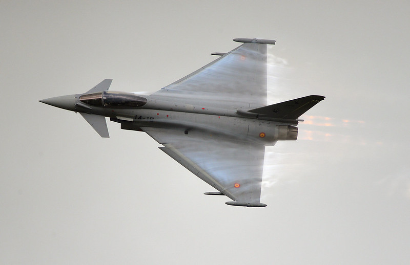
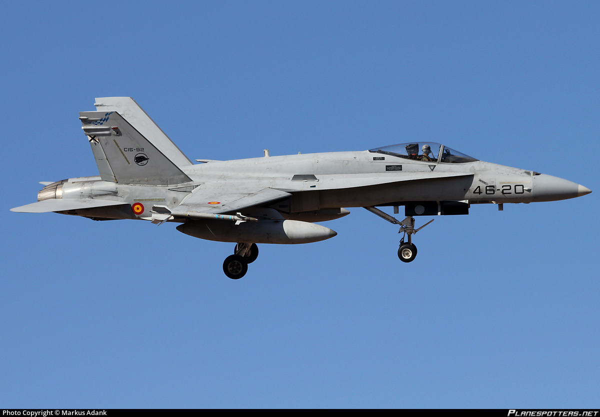
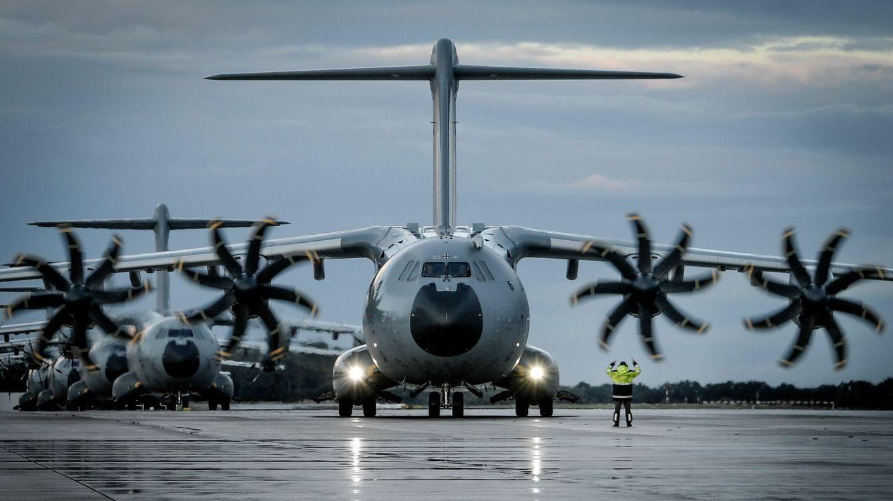
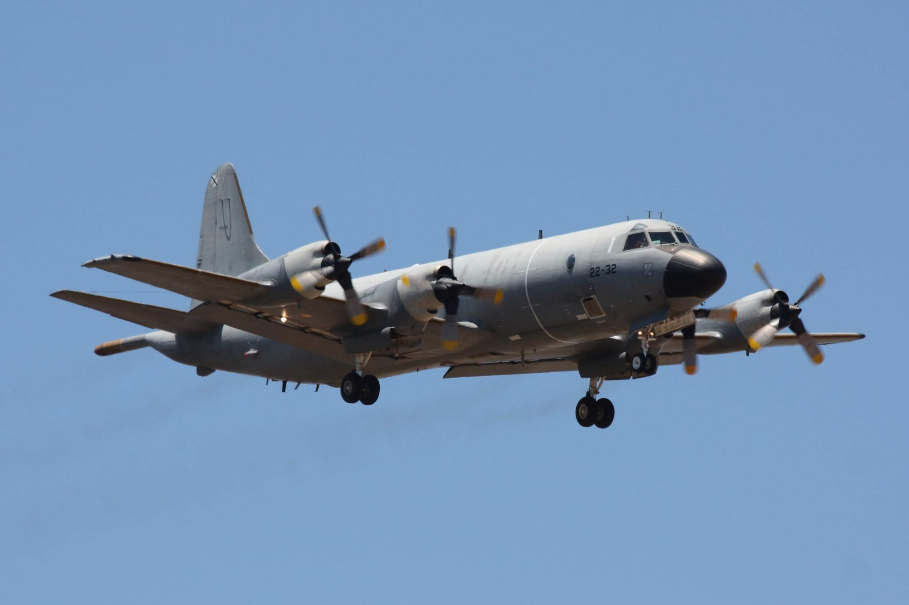

Aqui veremos varios modelos de aviones que estan en servicio a día de hoy
Eurofighter Typhon
El Eurofighter Typhoon es un caza polivalente, bimotor, de gran maniobrabilidad, diseñado y construido por el consorcio de empresas europeas Eurofighter GmbH, creado en 1983 y compuesto por las compañías Airbus Group, BAE Systems y Alenia Aeronautica. Realizó su primer vuelo el 27 de marzo de 1994, entrando en servicio el 8 de abril de 2003 con Alemania. Su diseño con configuración de ala en delta-cantilever se parece al de otros aviones de combate modernos, tales como el Dassault Rafale, de Francia, y el Saab 39 Gripen, de Suecia. Se diseñó potenciando la agilidad, capacidades furtivas y la inclusión de sistemas de aviación avanzados, convirtiéndolo en la fecha de lanzamiento en uno de los mejores cazas de cuarta generación entonces en servicio. Ante la irrupción de los aviones de combate de quinta generación, se encuentra en desarrollo un programa de actualización llamado Long Term Evolution, con el fin de prolongar sus capacidades y vida útil.
La producción en serie del Eurofighter Typhoon ha sido dividida en tres fases (tranches), con un aumento gradual de las capacidades del avión en cada una de ellas. Entró en servicio inicialmente con la Real Fuerza Aérea (RAF) británica, la Luftwaffe alemana, la Fuerza Aérea Italiana, el Ejército del Aire y del Espacio de España. Arabia Saudí firmó un contrato que ascendía al valor de 4430 millones de libras (aproximadamente 6400 millones de euros de 2007) por 72 aviones.
Mc Donnell Douglas F-18 Hornet
El McDonnell Douglas F/A-18 Hornet es un caza polivalente bimotor de cuarta generación de origen estadounidense con capacidad todo tiempo, para ser embarcado en portaviones. Fue desarrollado en los años setenta por la compañía McDonnell Douglas (desde 1997 integrada en Boeing) a partir del prototipo Northrop YF-17 para la Armada y el Cuerpo de Marines de los Estados Unidos. El Hornet también ha sido exportado a siete países para servir en sus fuerzas aéreas. Desde 1986 es usado para acrobacia aérea por el grupo de demostración aérea Blue Angels de la Armada estadounidense.
Este avión de combate combina capacidades de caza y ataque contra objetivos tanto aéreos como terrestres; de ahí su designación F/A, «F» de Fighter y «A» de Attack (en español: «caza» y «ataque»). Las principales misiones que puede desempeñar son: caza de escolta, defensa aérea, supresión de defensas aéreas enemigas, interdicción, apoyo aéreo cercano y reconocimiento. Por su versatilidad y fiabilidad ha demostrado ser un valioso aparato, aun cuando había sido criticado por su falta de alcance y de capacidad de armamento comparándolo con sus predecesores más recientes, como el F-14 Tomcat en el papel de caza y cazabombardero, y los A-6 Intruder y A-7 Corsair II en el papel de ataque.
Airbus A400M
El Airbus A400M Atlas, apodado Grizzly durante la fase de pruebas en vuelo, es un avión de transporte militar europeo de largo alcance y cisterna propulsado por cuatro motores turbohélice, diseñado por Airbus Military (hoy Airbus Defence and Space) para cubrir las necesidades de transporte aéreo de los países adheridos al programa.
Se han encargado un total de 194 aparatos, por parte de 8 países, para reemplazar a varios modelos más antiguos, principalmente el Lockheed C-130 Hercules y el Transall C-160.7 Airbus Military entregó la primera aeronave a la Armée de l'air francesa a comienzos del año 2013.
Lockheed P.3 Orión
El Orion es un avión de transporte de peso medio, con alas grandes, rectas y extendidas para un mejor rendimiento en vuelos a baja altitud y velocidad; puede operar en pistas de aterrizaje militares, aeropuertos civiles y pistas de segundo nivel, incluso en carreteras, con un tren de aterrizaje alto y reforzado en forma de triciclo. El delantero, con dos ruedas, se retrae bajo la cabina de mando y el tren de aterrizaje principal, con dos ruedas cada pata, se retrae bajo los dos motores en las alas instalados junto al fuselaje central.
Tiene 4 turbohélices insertados en las alas, cada hélice tiene 4 palas grandes muy eficientes a baja altitud y velocidad, las palas pueden rotar sobre su propio eje para mejorar su rendimiento a gran altitud y velocidad. Con un sofisticado mecanismo hidráulico y de engranajes, los motores insertados en las alas lo convierten en un potente tetramotor de turbohélice, las toberas de expulsión de gases de escape sobre las alas le dan una velocidad comparable a los cazas turbopropulsados, o incluso a reactores subsónicos de ataque a tierra como el A-10 Thunderbolt II.